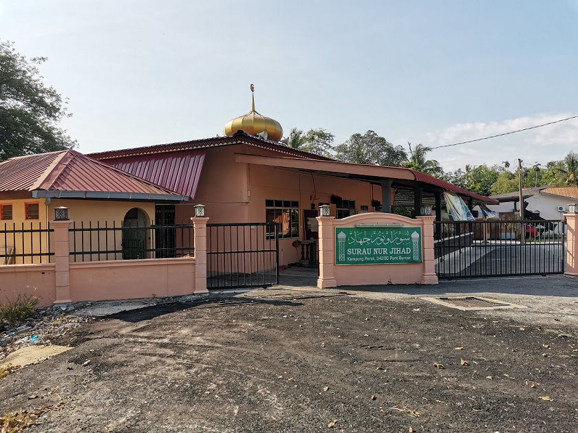

Unfortunately, I don't have the picture of Tabika Kemas as at this point, the original place have been turned into a "musolla". This is the picture I could take, the place after renovation and turned into "musolla".
I started going to Tabika Kemas since 5 years old. As a kindergartener, kids are taught with basic numerals and alphabets as a preparation for primary school. There are not really much to say, except Tabika Kemas is pretty near my house, maybe around 5 minutes cycling.
Getting into a new environment and having new people to meet is pretty challenging for a lot of kids, including myself. I have a quite hard time to get used with the environment. There are three class in the school which is Cemerlang, Gemilang, and Bestari. Bestari being the being the class for students with good result, Gemilang second and followed by Cemerlang. From year 1 to 3, I am in the Gemilang class. Then, I got into Bestari class in year 4 till 6. I managed to get 3'A and 2'B in UPSR.
I went to SMK Seri Perak in 2013. Again, the same thing with SK Titi Serong is to get used to with the new environment. Luckily, there are a lot of my friends from primary school getting in the same school although in different class. There are at least 9 classes and I happened to be in A1 from form 1 till for 3. In form 4, I was accepted to VT2 class, which has additional subject of ICT, Economy, and Commerce. I got 5'A 2'B 1'C and 1'D in SPM.